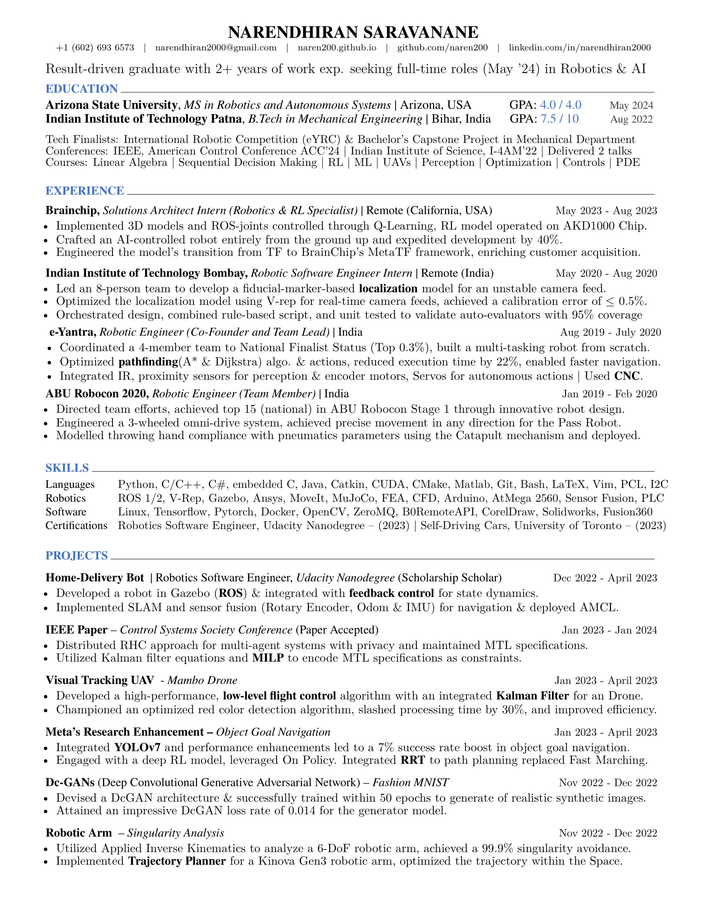

<!-- <br>
<br>
<br> -->
<p style="text-align: center; font-size: 15px;"> Resume PDF link:  <a href="https://docs.google.com/viewerng/viewer?url=https://naren200.github.io/pdfs/CV.pdf">https://docs.google.com/viewerng/viewer?url=https://naren200.github.io/pdfs/CV.pdf</a></p>

<div style="text-align: center;">
  
</div>

<!-- <div style="text-align: center;">
    <iframe src="https://docs.google.com/gview?url=https://naren200.github.io/pdfs/CV.pdf&embedded=true" width="90%" height="1100px"></iframe>
</div> -->

<style>
    iframe {
      height: 1100px !important;
    }
</style>
